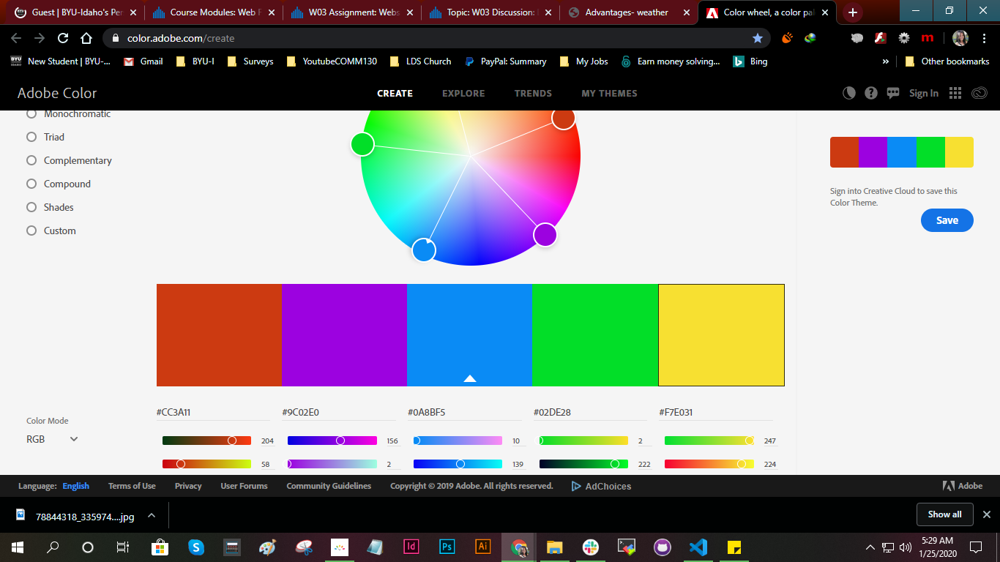

Color Scheme

I used an analogous color scheme to create a rich, monochromatic look. I use this scheme because they are often found in nature and harmonious and pleasing to the eye.

I used an analogous color scheme to create a rich, monochromatic look. I use this scheme because they are often found in nature and harmonious and pleasing to the eye.